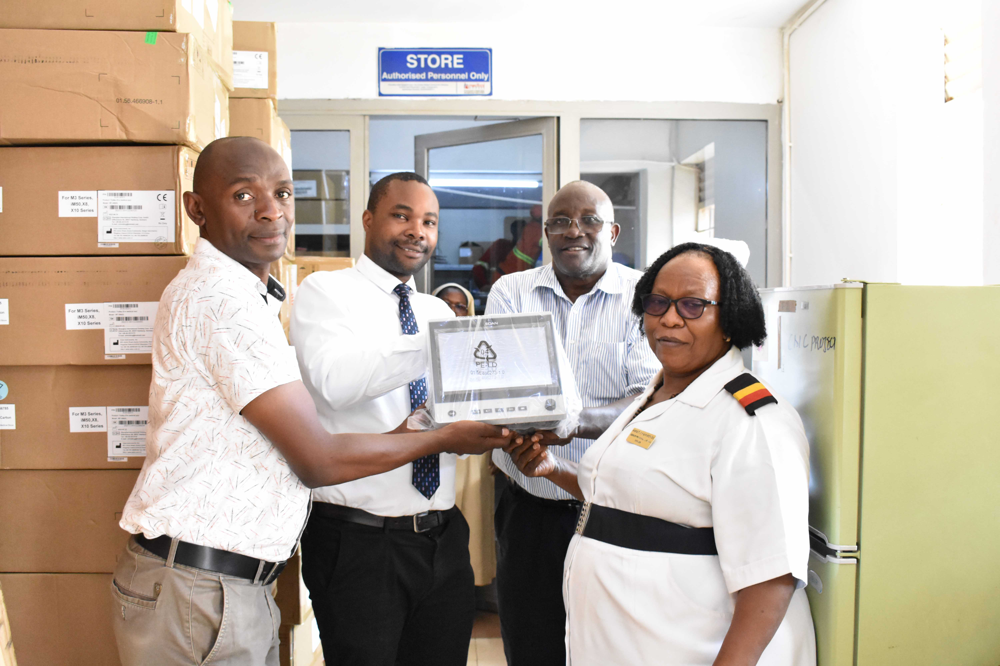
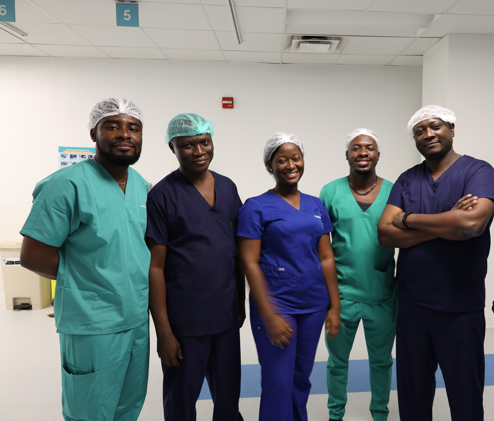
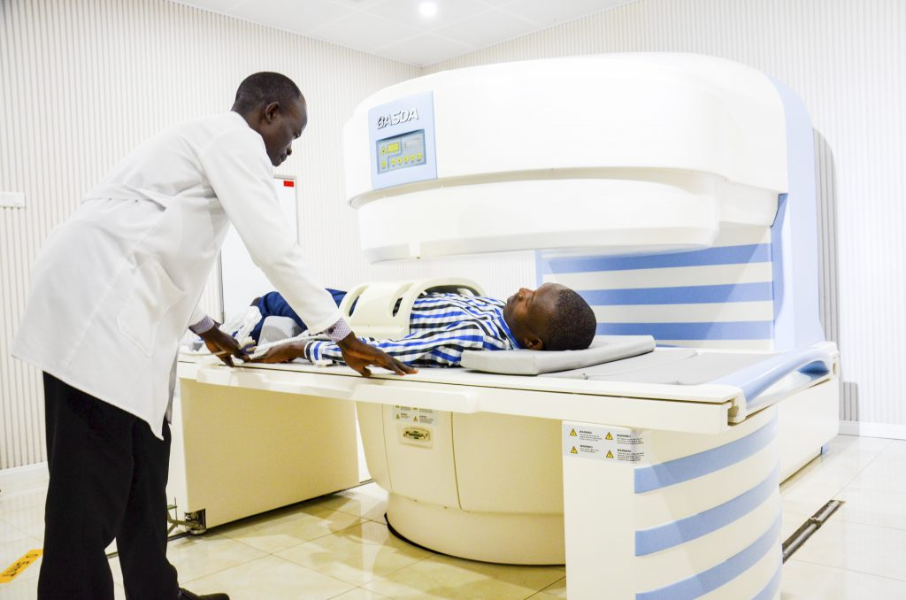

ST. PETER'S MEDICAL HOSPITAL-KAWEMPE
| HOME PAGE | ABOUT US | OUR SERVICES | CONTACT US |
St. Peter's Medical Hospital was established in 1999
and has been serving ugandans for the past 25 years.
Our dedeication to serve and compassionate care makes us a trusted healthcare friend to everyone
Our stuff
Meet a stuff of dedicated and experienced doctors, nurses, and other healthcare professionls ready to serve you
|  |  |
|  |
St. Peter's Medical Hospital is acrredited by th joint commission and registered under the Ministry of Health.
In addition, we hve received different awards for excellence in patient care and services we provide.
We are so proud to be one with the best health services that save the lives of ugandans
| SSEKITENDE PETER |